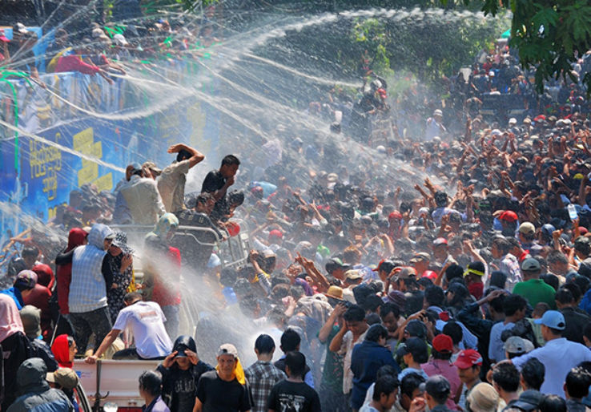
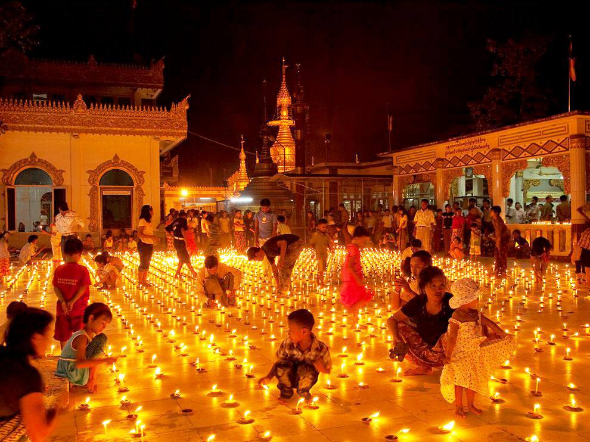
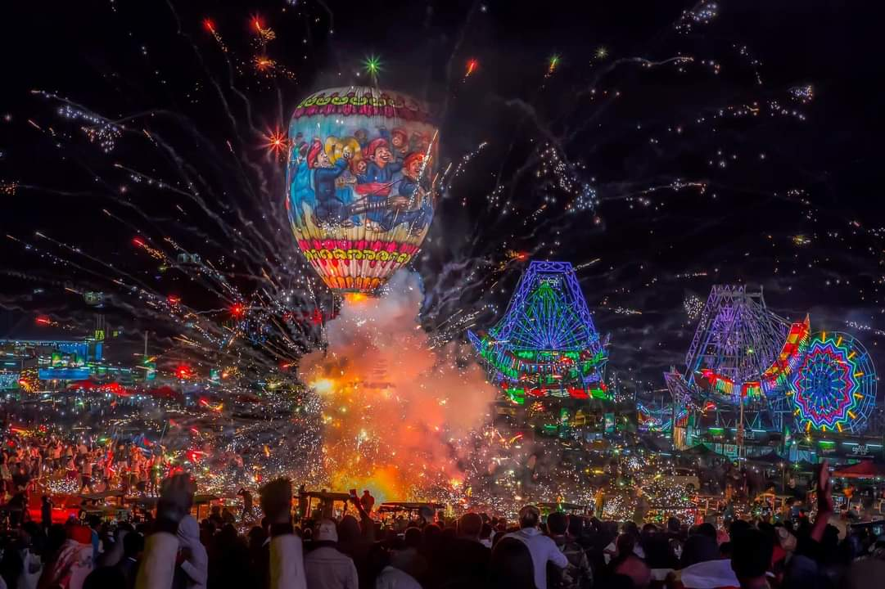

フェスティバルとイベント
ミャンマーの文化を肌で感じる、活気あふれるお祭り
ミャンマーの主要な祝祭

ティンジャン (水かけ祭り)
時期：毎年4月中旬（ミャンマーの新年）
内容：一年間の汚れを洗い流すという意味を込めて、国中で盛大に水をかけ合います。最も陽気で活気のあるお祭りです。

タディンギュット祭り (光の祭り)
時期：毎年10月頃（ミャンマー暦の7月の満月）
内容：パゴダや家々がランタンや電飾で美しく飾られます。夜のパゴダを訪れ、幻想的な雰囲気を楽しめます。

タザウンダイン祭り
時期：毎年11月頃（タディンギュットの翌月の満月）
内容：熱気球を夜空に放つことで有名で、特にシャン州のタウンジーで行われる大会は壮観です。